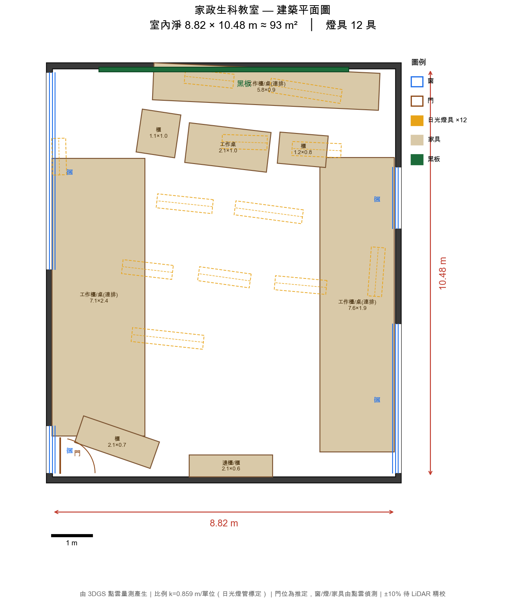
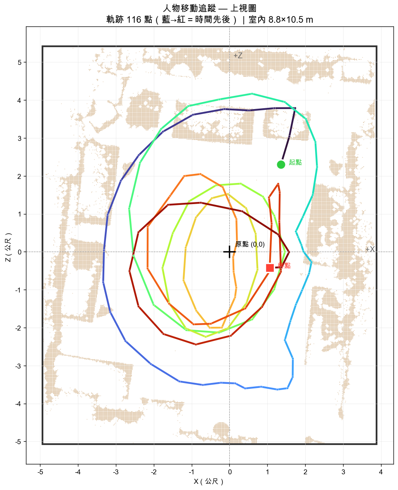

93 m²
實測樓地板
135 萬
高斯點
350
COLMAP 視角
12
偵測燈具
P1
即時人流


沉浸瀏覽
🚶
第一人稱行走
WASD / 觸控搖桿走動，牆與家具有物理碰撞，雙層垂直感知，支援 VR。
推薦入口進入 →🏛️
清晰瀏覽
354 視角訓練、清理後的乾淨版本，黑板字跡可讀。滑鼠軌道環視。
畫質優先進入 →🌐
廣域瀏覽
696 視角全覆蓋版，含更多角落與設備，霧紗略多。比較資料量的影響。
覆蓋優先進入 →空間分析
📐
建築平面圖 + 人流追蹤
建築製圖風格上視圖，標注牆/窗/門/燈/家具與尺寸；人物即時座標與軌跡記錄。
公尺座標開啟 →📏
尺寸量測化
以天花板日光燈管（4ft=1.22m）標定比例，自動算出空間與家具尺寸。
±10% · 待 LiDAR 精校看腳本 ↗🧱
碰撞 / 幾何
從點雲抽碰撞殼與佔據格，供物理引擎、碰撞偵測、量距使用（無需 CUDA）。
Open3D看腳本 ↗數位孿生
📍
即時人流（P1）
教室攝影機 → 人物偵測 → 平面圖上即時定位。連線後真人進場即現點。
● LIVE 待校準開啟 →🎬
化身示範動畫
用真實拍攝軌跡與合成路徑，示範化身在 3D 空間巡場、跟拍、多人交會。
展示觀看 →🛠️
部署手冊
攝影機接入、四點地板校準、隱私與進階（骨架/照片級化身）路線。
文件閱讀 ↗